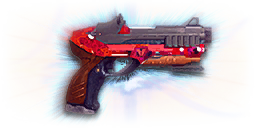

← Back to the The President comparison
Sage Guide · Terran Republic · Pistol — Secondary Weapon
The Terran Republic’s directive pistol — a Repeater that keeps firing in 3-round bursts as long as the trigger is held. One tap always fires three bullets; there are no single shots. Earned, not bought: the reward for mastering the TR’s pistols.
The one-line verdict: Nine shots to kill, 112 damage a bullet at 845 RPM, 18 in the magazine: it fires in 3-round bursts, even when held. Fight inside 10 metres, short holds, release, repeat — and reload behind cover.

The The President · Terran Republic · Directive reward · earned, not bought
Every enemy infantry has 1,000 health (500 shield + 500 health). Your bullet does 112 damage up close, fading to 77 at long range. Headshots count double, leg shots count less (×0.9). That gives you three numbers worth memorising — and remember what this gun is for: it finishes fights your primary started, so the kill usually costs fewer of these bullets than the table says.
| Range | Damage | Head | Chest | Legs | Chest vs shielded Heavy |
|---|---|---|---|---|---|
| Close · 5 m | 112 | 5 | 9 | 10 | 13 |
| Close · 10 m | 110.33 | 5 | 10 | 11 | 14 |
| Mid · 25 m | 97.83 | 6 | 11 | 12 | 15 |
| Far · 40 m | 85.33 | 6 | 12 | 14 | 17 |
Perfect-accuracy times to kill (chest): 0.57 s at 5 m, 0.64 s at 10 m, 0.71 s at 25 m, 0.78 s at 40 m. All headshots: 0.28 s at 5 m. In real fights you’ll land maybe half your rounds — still, this is why the head matters so much on this gun. A 18-round magazine holds 2 full chest-kills at close range, fewer if you miss.
Full power to 8 m, then a steady slide to minimum at 50 m.
One gun, three fighting styles — and pistol ranges, not rifle ranges. The right technique changes with distance: use the range finder below to see what your bullets do at any range, then learn the three bands underneath it. Close is 0–10 m, mid is 10–25 m, far is anything past 25 m.
How to fight hereHipfire at the chest and keep strafing. Scoping in here costs time and drops your speed to 0.75× — trust the hip cone; it stays on his chest at this range.
Aim: centre of the chest, from the hip. Keep moving — hold the trigger and let the 845 RPM do the work, but lift off before the cone blooms.
Scoping in costs you time and drops your speed to 0.75× — at arm’s length that gets you killed. Strafe side to side (A/D) while firing so you’re hard to track. This is the pistol’s home ground: the fight your primary couldn’t finish, at the range where a sidearm is fastest to bring to bear.
Aim: neck / upper chest. Short holds of a few rounds, release, hold again. The recoil climbs into the head for free damage if you don’t over-hold.
This is the longest range a pistol should be your first choice. Full damage holds to 8 m, and the aimed cone is a fraction of the hipfire cone. Strafe while scoped; at 0.75× you move faster aimed than a scoped Heavy, and a moving target still beats a still one.
Aim: chest. Short holds only, with a real pause between them. Past 25 m the cone blooms faster than the target dies — tap the trigger in short holds or don’t engage.
At 77 damage you need 12 chest hits — a long, loud advertisement of your position. Take these shots at stationary or fleeing targets only. Otherwise, your better play is to reload your primary, or close the distance behind cover. Knowing when not to shoot your pistol is a skill too.
Your accuracy is decided by two things before skill even enters it: what your body is doing (your stance sets the starting cone of fire) and what your finger is doing (every shot grows that cone). The The President fires in 3-round bursts — hold the trigger and it keeps bursting, tap it and you still get three bullets, so “firing modes” are something you do with your finger, not a setting on the gun.
| Stance | Starting cone | What it means for you |
|---|---|---|
| Sprinting | 7.0° | Maxed out — the widest the cone can be. This is the section 01 disaster: never start firing from a sprint. |
| Hipfire, moving | 1.50° | Walking or strafing from the hip. Fine inside ~8 m, leaks rounds past the target beyond it. |
| Hipfire, standing | 1.00° | Your point-blank default. The ring at 8 m in section 04 is this stance drawn out. |
| Hipfire, crouched | 1.00° | The tightest hipfire you have. Crouch when holding a doorway from the hip. |
| Aimed (ADS), feet planted | 0.80° | Standing or crouched makes no difference here — about 1× tighter than hipfire. This is why section 01’s order matters. |
| Aimed (ADS), strafing | 0.80° | The moving floor. The moving cone equals the standing cone from the very first shot (nStill ADS = 0), so strafing costs you nothing in cone size on this gun. You still move at 0.75× while scoped. Strafe between shots to stay hard to hit; plant your feet during each shot. |
Hipfire, the numbers behind it: standing still you get 5 shots from the standing cone before bloom pushes it past the moving cone — after that, standing still buys you nothing over strafing, so keep moving. Aimed, that number is 0: the ADS cone is already at its moving floor, so strafe from the first ADS shot.
| Mode | How your finger does it | Use it at |
|---|---|---|
| Short holds — the default | Hold for a few rounds, release, hold again | Almost everything, 0–25 m. Each release resets the cone, so every hold starts at 0.80°. |
| The mag dump | Hold the trigger and don’t let go | Point blank only. Bloom maxes out fast — past ~8 rounds you’re spraying, not aiming, and an 18-round magazine is gone in 1.3 seconds. |
| Feathered holds | Very short holds of 2–3 rounds, with a real pause between | 25 m and out, at exposed or stationary targets. Slow, but every round goes where the dot is. |
Recoil, for the record: vertical 0.65°, horizontal up to 0.175°, angle 0°; first-shot kick ×1.5. Bloom is 0.10° per shot from the hip and 0.05° per shot aimed.
A target 10 m away, aiming down sights. Press and hold FIRE (mouse, touch, or hold Space with the button focused) and watch the holes walk wider the longer you hold — that’s firing from an ever-growing cone. Release, let the cone reset, fire again. Short holds win; long holds spray. This practice window is shared by the whole Sage series: it’s driven by a weapon profile plugged into the window — here the The President’s (845 RPM, 0.80° starting cone, 0.05° bloom per shot, target at 10 m) — and the spread is drawn at true scale from those numbers.
Cone of fire — fills as you fire, empties when you pause.
Your holds will be graded here — short holds stay tight, long holds spray.
Some things are easier to show than to say. Here’s what your bullets actually do: how wide hipfire spreads at 8 metres, what good trigger discipline looks like, and what the 1x sight really changes. The hands-on version — working the trigger yourself — is the practice window in section 03.
A full-size target 8 m away — an arm’s-length room fight. The rings show where hipfire rounds land around your aim point (the chest). Sizes are drawn to scale from the gun’s real cone-of-fire numbers.
Read it this way: standing still, the 0.14 m ring fits well inside the chest — most rounds hit a target this size, which is why hipfire works point-blank on this gun. Move and it grows to 0.21 m — still inside the torso — so even strafing hipfire stays on him at arm’s length. The rings only grow with distance while the man doesn’t, so past ~10 m they start leaking past him: the exact moment to switch to aiming down sights, where the spread shrinks to a dot. (Ring sizes use the real geometry: spread diameter = 2 × distance × tan(cone ÷ 2).)
Every shot widens your cone of fire (“bloom”). Pausing — or re-aiming between bursts — resets it. Same 18 rounds, two very different outcomes:
The target pattern is short holds of a few rounds — that’s the ideal. Longer holds are fine while you’re new, but past that the bloom (0.05° per shot aimed, 0.10° from the hip) keeps growing with every shot, so the extra bullets mostly decorate the wall behind your enemy instead of hitting him. Short holds also leave you rounds for the second enemy — and with an 18-round magazine, you can’t afford to waste them.
No zoom, no dot — a front post inside a rear ring. The target at 25 m is small and the post covers his chest at longer ranges. Usable, but it eats a lot of your view — the first thing to replace.
Same target, same 25 m — but the post is gone and a red dot sits on his chest. Nothing blocks your edges, and the dot is faster to place than a post. Best everywhere a pistol fights. Pistols take 1x sights only — there is no magnified optic for a sidearm.
That’s the whole 30-cert decision from section 05 in one picture: iron sights for your first hour, the 1x reflex for everything after.
Unlike a primary, a pistol ships nearly bare — iron sights, no rail, no barrel. Nothing here is free except the gun itself, so buy in the order shown and stop whenever the gun feels right. Costs below are the wiki’s cert prices; where the wiki is silent on a pistol attachment, the series standard applies (100 certs per attachment, 30 for the 1x sight). A pistol has no magnified optic and no grip slot — the slots are optic, barrel, rail, ammo and magazine.
The post-and-ring sights the gun ships with. Usable, but they eat a lot of your view — the first thing to replace.
Good: your first hour, while you decide whether you like the gun.
Bad: any fight past 20 m — the front post covers the target you’re trying to hit.
A clean red-dot sight with no magnification. Your default once you own it, and honestly your best all-round option — see section 04 for the side-by-side.
Good: everywhere a pistol fights, indoors and out to ~25 m.
Bad: nothing a pistol does — there is no magnified pistol optic to want instead.
The The President’s recoil is already mild — vertical 0.65°. Plenty of veterans run this slot empty forever.
Good: your first weeks. Spend certs on your primary and suit slots first.
Bad: nothing — there’s no downside to an empty slot.
You vanish from the minimap when firing and your shots are quiet. In exchange, bullets fly 15% slower (375 → 319 m/s) — harder to lead moving targets.
Good: flanking behind enemy lines, and finishing wounded enemies without announcing yourself.
Bad: a straight duel — you pay velocity for stealth you don’t need, and a pistol duel is decided in under a second.
Cuts vertical recoil by 30%%. Costs you: hipfire spread grows 15%%, and enemies see you on the minimap from 35 m farther away when you fire.
Good: if you mostly aim down sights at mid-range and the upward climb bothers you.
Bad: hipfire builds and sneaky play — you get louder on the map and sloppier from the hip.
Hides your muzzle flash so your own view stays clear at night — but you appear on enemy minimaps from 15 m farther away.
Good: night fights where your own flash blinds you. A comfort pick, nothing more.
Bad: as an early purchase — it changes no fight outcome. Buy it last, if ever.
Hipfire accuracy improves by a third (33%% tighter cone). Replaces the Darklight — you can’t have both.
Good: indoor point-holds and stairwell fights where you hipfire inside 8 m — which is most of what a pistol is for.
Bad: open bases — you give up the infiltrator-hunting torch for a bonus you rarely use.
A torch whose beam reveals cloaked infiltrators. Toggle it with the attachment key (X by default).
Good: hunting a stalker infiltrator camping your capture point — sweep corners with it.
Bad: as your everyday rail — it gives zero accuracy help, and the beam advertises your position.
KCAP (“kneecap”) ammunition flips the leg-shot penalty into a bonus: leg shots deal ×1.2 instead of ×0.9, while headshots drop from ×2 to ×1.5. Headshots are still better — but a leg hit stops being a wasted bullet. (Census addends: headshot −0.5, legshot +0.3.)
Good: close fights where you’re aiming at a moving target’s centre mass and legs — every hit now counts for something.
Bad: if you reliably land headshots — you’re paying 200 certs to make your best shots worse.
Doubles the magazine — 18 rounds becomes 36, the largest any sidearm can carry — so more finishers per draw before you’re forced back to a reload. Costs you a slightly slower draw and re-holster.
Good: any pistol you actually rely on: a sidearm’s job is to be there when the primary isn’t, and more rounds means more second chances.
Bad: nothing meaningful — the draw penalty is small and you’re already drawing it in an emergency.
A pistol is a sidearm, not a kit — so every setup below is really a pairing: the primary you fight with, and the The President you finish with. The pistol’s job is the half-second after your primary runs dry, and every loadout here is built for that moment.
0 certs · Day one
What the gun costs you. Genuinely good — learn the pistol on this before spending anything.
130 certs · Recommended
The best value in this whole guide. Covers every finish from a doorway to a tower courtyard.
230 certs · Indoor finisher
Built to hipfire down stairwells and hold a capture point room after your primary empties. Swap back to the All-Rounder outdoors.
230 certs · Kneecapper
Leg shots now pay ×1.2 instead of ×0.9, so centre-mass hits on a strafing target all count. Headshots drop to ×1.5 — still better, just less of a prize.
Your primary just ran dry mid-fight. Drawing your sidearm is faster than reloading it — that is the pistol’s entire reason to exist. Train the swap until it’s one motion: primary clicks empty, pistol is already out. The kill you finish with the The President is a kill your reload would have lost.
Every shot widens your cone of fire. Holding the trigger past ~8 rounds at range means later bullets fly around your target, not into it. A few rounds is the ideal hold; release the trigger for a heartbeat between holds — your accuracy resets and your hits per magazine roughly double.
Headshots deal double damage: 5 kills up close versus 9 to the chest, in 0.28 s instead of 0.57 s. Don’t aim at the head directly — aim at the neck and let the gun’s natural upward climb carry shots into the skull. It’s the single biggest damage upgrade you own, and it’s free.
Reloading takes 1.7 s, and a 18-round magazine empties fast when you’re finishing fights. Reload after every kill, behind cover, while your primary is back in your hands — never in the open, never mid-duel. A pistol with a full magazine is a second life; an empty one is a paperweight.
Walk with your crosshair at head height, pointed where an enemy’s head will appear — a doorway edge, a corner, stairs. Most beginners lose fights in the half-second spent dragging the crosshair onto target. While firing, tap A/D to strafe: your ADS cone is already at its moving floor (nStill ADS = 0), so strafing costs you nothing and makes you dramatically harder to headshot back.
Your standing hip cone is 1.00°, and the 0.14 m ring at 8 m fits inside his chest. Inside ~8 m, don’t ADS at all: keep strafing and let the hipfire do the work. Past ~10 m the rings start leaking past him, and that’s the exact moment to switch to the sight.
Every gun has a price. Here’s where the The President pays — and the habit that covers each hole.
Nine chest shots to kill in 0.57 s. Every bullet matters less than on the Mag-Shot’s 200, and the magazine only holds 18.
Play around it: Don’t trade chest shots. Headshots close the gap entirely — 5 to kill up close in 0.28 s — and your 845 RPM forgives a miss (71 ms) better than any slower gun forgives one.
Hold the trigger and the cone grows 0.05° per aimed shot from a 0.80° start — the widest aimed cone of the directive pistols. Past ~8 rounds you’re spraying, not aiming.
Play around it: Short holds, release, hold again. Holding the trigger down is a convenience, not a strategy — treat it like a burst gun with a lazy finger.
Full damage ends at 8 m and by 40 m you’re at 77 damage needing 12 chest shots in 0.78 s.
Play around it: Fight inside 10 m or don’t fight with the pistol at all. Past 25 m, reload your primary instead.
Two kills is the whole magazine at perfect aim — and a mag dump empties it in 1.3 seconds.
Play around it: Count your holds. Reload after every kill, and never start a second duel on a half-empty magazine.
845 RPM of burst fire is a dinner bell: everyone in the room knows exactly where you are.
Play around it: Take the kill and move. The President wins the first duel and loses the second one against the friend who heard it.
Open the world map, travel to VR Training, and run these on the target dummies. Five minutes before a play session beats an hour of dying confused.
Empty your primary into a dummy, then swap to the The President and finish it. Repeat until the swap is one motion and the first pistol shots land within a second of the last primary shot.
At 10–20 m, kill dummies with short holds of a few rounds, releasing fully between holds. If a hold goes wide, shorten it. Goal: whole kills without a single wild round.
Walk the dummy range keeping your crosshair glued to neck height the whole time, snapping to each new target without dipping to the floor or sky. Slow and clean first; speed comes on its own.
Pick a dummy, stand 5 m away, and circle it with A/D while hipfiring it down without stopping. This is your point-blank survival skill — the one that fires while your movement does the defending.
Fire exactly half your magazine, step behind a pillar, reload, repeat. Train your hands to reload early and only in cover until it’s automatic — in real fights you’ll do it without thinking, which is the point.